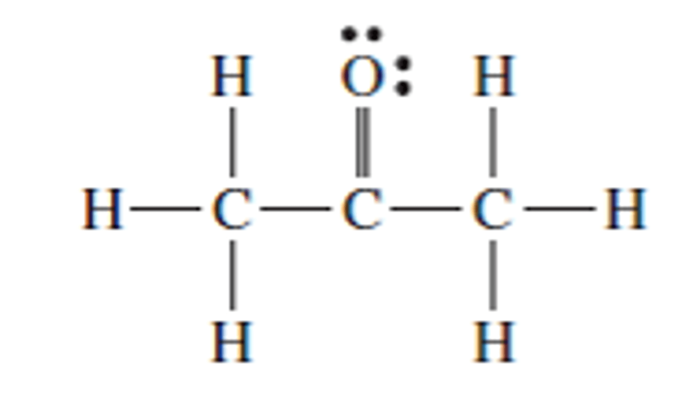

1) Identify the place which has the highest boiling point of water.
A) New Orleans, sea level
B) Death Valley, 282 feet below sea level*
C) Mt. Everest, 29,035 feet
D) Denver, Colorado, 5280 feet
2) How much energy is required to heat 32.7 g H2O from a liquid at 76.4°C to a gas at 130°C? ΔHvap = 40.7 kJ/mol Cliquid = 4.184 \( \frac{J}{g°C} \) Cgas = 2.01 \( \frac{J}{g°C} \) Csolid = 2.09 \( \frac{J}{g°C} \) Tmelting = 0°C Tboiling = 100°C
A) 1340 kJ
B) 92.9 kJ
C) 5270 kJ
D) 79.1 kJ*
3) Choose the substance with the lowest vapor pressure at a given temperature.
A) SiS2
B) H2O*
C) H2S
D) O2
4) Which of the following has the highest viscosity?
A)
B) *
C)
D)
5) Determine the normal boiling point (at 760 mm Hg) of a substance whose vapor pressure is 34.5 mm Hg at 44.5°C and has a ΔHvap of 31.5 kJ/mol.
A) 252 K d
B) 318 K c
C) 46.2 K b
D) 429 K*
6) Using the phase diagram below, what phase transition would occur if H2O was cooled from 48°C to -68°C at 0.005 atm?
A) Freezing
B) Condensation
C) Sublimation
D) Deposition*
7) Which substance has the lowest intermolecular forces?
A) CH2O
B) CH3OH
C) CH4
D) H2*
8) What is the strongest type of intermolecular force present in NH3?
A) Hydrogen bonding*
B) Ion-dipole forces
C) London dispersion forces
D) Dipole-dipole forces
E) None of the above.
9) (SLO 1.2) In liquid propanol CH3CH2CH2OH, which intermolecular forces are present?
A) Only dipole-dipole and ion-dipole forces are present
B) Dispersion, hydrogen bonding, and dipole-dipole forces are present*
C) Only dispersion and dipole-dipole forces are present
D) Only hydrogen bonding forces are present
10) (SLO 1.5) List the compounds below in decreasing boiling point order. CH3CH2CH2CH3 He CH3CH2CH2OH
A) CH3CH2CH2OH > CH3CH2CH2CH3 > He*
B) CH3CH2CH2CH3 > He > CH3CH2CH2OH
C) He > CH3CH2CH2OH > CH3CH2CH2CH3
D) CH3CH2CH2CH3 > CH3CH2CH2OH > He
11) What is the major intermolecular force between H2S and PH3?
A) Dipole-dipole forces*
B) Hydrogen bonding
C) London dispersion forces
D) Ion-dipole forces
12) Which of the following compounds will be most soluble in methanol (CH3OH)?
A) Ethandiol *
B) Hexane
C) Acetone 
D) Trimethylamine
E) None of the above.
13) Which of the following would result in an endothermic reaction?
A) The reactants are at a lower potential energy than the products*
B) The reactants are at a higher potential energy than the products
C) The reactants have weaker bonds than the products
D) The products and reactants are at the same potential energy level
14) Which of the following have a great impact on the solubility of a gas in a liquid?
A) Pressure only
B) Temperature only
C) Temperature and pressure*
D) None of the above.
15) Determine the Henry's law constant for an unknown gas in water at 25°C if the unknown gas at a pressure of 0.0481 atm produces a solution with a concentration of 3.82 M.
A) 4.59 M/atm
B) 79.4 M/atm*
C) 0.184 M/atm
D) 0.0126 M/atm
16) (SLO 1.1) The osmotic pressure of a solution formed by dissolving 27.7 mg of Aspirin (C9H8O4) (180.16 g/mol) in enough water to make 0.39 L of solution at 20°C is _____ atm.
A) 0.0037
B) 9.48
C) 0.000647
D) 0.00948*
17) (SLO 1.3) The Henry’s law constant for oxygen gas in water at 20ºC is 14 x 10-4 M/atm. When the partial pressure of helium above a sample of water is 0.633 atm, the concentration of helium in the water is ______ M.
A) 452
B) 8.86
C) 0.000886*
D) 0.00221
18) (SLO 1.4) A solution is 0.798 m KOH (56.11 g/mol). What is the molarity of the solution if the density of the solution is 1.13 g/mL?
A) 0.0197 M
B) 0.902 M
C) 0.764 M
D) 0.863 M*
19) (SLO 1.6) What is the change in boiling point of a solution of 26.9 g KCl (74.55 g/mol) in 739 g of water? Kb for water is 0.512°C/m. Assume ideal behavior.
A) 0.25°C
B) 0.5°C*
C) 0.00025°C
D) 18.6°C
20) (SLO 1.7) What is a solution containing the equilibrium amount of solute is called?
A) An unsaturated solution
B) A supersaturated solution
C) A saturated solution*
D) A dilute solution
E) None of the above.
21) Calculate the ΔS°rxn at 25°C using the following information. C6H12O6 (s) + 6 O2 (g) → 6 CO2 (g) + 6 H2O (l), ΔS°rxn = ?
S°(J/mol∙K)
C6H12O6 (s)
212.1
O2 (aq)
205.2
CO2 (g)
213.8
H2O (l)
70.0
A) 260. J/K*
B) 3150 J/K
C) 580. J/K
D) -133 J/K
22) Calculate the ΔG°rxn at 25°C using the following information. AgBr (s) → Ag+ (aq) + Br- (aq), ΔG°rxn = ?
ΔH°f (kJ/mol)
S°(J/mol∙K)
ΔH°f (kJ/mol)
S°(J/mol∙K)
AgBr (s)
-100.4
107.1
Ag+ (aq)
105.79
73.45
Br- (aq)
121.4
80.71
PO43-(aq)
-1277.4
-220.5
HPO42- (aq)
-1292.1
-33.5
H2PO4-(aq)
-1296.3
90.4
H+ (aq)
0
0
Cl- (aq)
167.1
56.6
AgCl(s)
-127.0
96.3
A) 314 kJ*
B) -1.37x104 kJ
C) -307 kJ
D) 326 kJ
23) Consider a reaction that has a negative ΔH and a negative ΔS. Which of the following statements is TRUE.
A) The reaction will be spontaneous at high temperatures
B) The reaction will be nonspontaneous at all temperatures
C) The reaction will be spontaneous at all temperatures
D) The reaction will be spontaneous at low temperatures*
24) (SLO 5.1) Consider the following reaction at constant pressure. Use the information here to determine the value of ΔSsurr (enthalpy change in the surrounding) at 363 K. Predict whether or not this reaction will be spontaneous at this temperature.
C(graphite) + 2 Br2 (l) ➞ CBr4 (s), ΔH = 29.4 kJ
A) ΔSsurr = -0.081, reaction is nonspontaneous*
B) ΔSsurr = 0.081, reaction is spontaneous
C) ΔSsurr = 29.4, reaction is nonspontaneous
D) ΔSsurr = 29.4, reaction is spontaneous
25) (SLO 5.2) Given the following equation Given the following equation, CH4 (g) + 3 Cl2 (g) ➞ CHCl3 (l) + 3 HCl (g), ΔG°rxn = -305.49 kJ Calculate the ΔG°rxn for the following reaction. 6 CH4 (g) + 18 Cl2 (g) ➞ 6 CHCl3 (l) + 18 HCl (g)
A) -1832.9 kJ*
B) -305.49 kJ
C) 1832.9 kJ
D) -50.915 kJ
E) None of the above.
26) (SLO 5.5) For a given compound, list the increasing order of entropy for a liquid, solid and gas.
A) Solid < gas < liquid
B) Gas < liquid < solid
C) Gas < solid < liquid
D) Solid < liquid < gas*
E) None of the above.
27) (SLO 5.3) Does the following reaction show an increase, decrease, or no change in entropy of the system?
Ch3OH (l) ➞ CO (g) + 2 H2(g)
A) No change in entropy
B) Decrease
C) Increase*
28) (SLO 5.4) Which law of thermodynamics states that energy is conserved in a chemical process?
A) Second
B) Third
C) First
D) Zero*
E) None of the above.
29) (SLO 5.7) Which answer correctly identifies the sign on change in enthalpy and entropy? H2O (l) ➞ H2O (g)
A) A positive ΔH and a positive ΔS*
B) A positive ΔH and a negative ΔS
C) A negative ΔH and a negative ΔS
D) A negative ΔH and a positive ΔS
E) All of the above.
30) (SLO 5.3) Which one of the following reactions would have a negative value for ΔS?

 *
*


 *
*